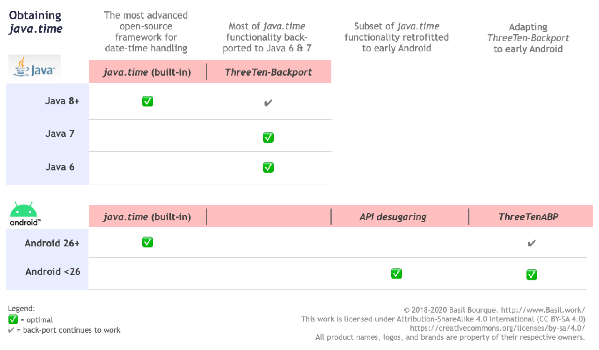

这是什么日期格式？2011-08-12T20:17:46.384Z
我有以下日期：2011-08-12T20:17:46.384Z. 这是什么格式？我正在尝试通过 Java 1.4
解析它DateFormat.getDateInstance().parse(dateStr)，我得到了
java.text.ParseException：无法解析的日期：“2011-08-12T20:17:46.384Z”
我想我应该使用SimpleDateFormat进行解析，但我必须先知道格式字符串。到目前为止，我所拥有的只是yyyy-MM-
dd，因为我不知道T这个字符串中的含义——与时区相关的东西？此日期字符串来自文件 CMIS
下载历史记录媒体类型lcmis:downloadedOn上显示的标签。
解答
T 只是将日期与时间分开的文字，Z 表示“零时差”，也称为“祖鲁时间”(UTC)。如果你的字符串 总是 有一个“Z”，你可以使用：
SimpleDateFormat format = new SimpleDateFormat( "yyyy-MM-dd'T'HH:mm:ss.SSS'Z'", Locale.US); format.setTimeZone(TimeZone.getTimeZone("UTC"));
或者使用Joda Time，你可以使用ISODateTimeFormat.dateTime().
更多建议
tl;博士
输入字符串使用标准 ISO 8601格式。
Instant.parse ( "2011-08-12T20:17:46.384Z" )
国际标准化组织 8601
此格式由实用标准ISO 8601定义。
将T日期部分与时间部分分开。最后Z的表示UTC（即零时分秒的 UTC 偏移量）。发音Z为“祖鲁语”。
java.time
与最早版本的 Java 捆绑在一起的旧日期时间类已被证明设计不佳、令人困惑和麻烦。避开他们。
相反，请使用Java 8 及更高版本中内置的java.time框架。java.time 类取代了旧的日期时间类和非常成功的 Joda-Time 库。
java.time 类在解析/生成日期时间值的文本表示时默认使用ISO 8601 。
该类代表UTCInstant时间轴上的一个时刻，分辨率为纳秒。该类可以直接解析您的输入字符串，而无需定义格式模式。
Instant instant = Instant.parse ( "2011-08-12T20:17:46.384Z" ) ;

关于 java.time
java.time 框架内置于 Java 8 及更高版本中。这些类取代了麻烦的旧旧日期时间类，例如java.util.Date,
Calendar, & SimpleDateFormat。
要了解更多信息，请参阅 Oracle 教程 。并在 Stack Overflow 中搜索许多示例和解释。规范是JSR 310。
现在处于维护模式的 Joda-Time 项目建议迁移到java.time类。
您可以直接与数据库交换 java.time对象。 使用符合JDBC 4.2或更高版本的JDBC 驱动程序。不需要字符串，不需要类。Hibernate 5
& JPA 2.2 支持 java.time 。java.sql.* __
在哪里获取 java.time 类？
-
Java SE 8 、 Java SE 9 、 Java SE 10 、 Java SE 11 和更高版本 - 标准 Java API 的一部分，带有捆绑实现。
- Java 9 带来了一些次要功能和修复。
-
Java SE 6 和 Java SE 7
- 大多数 java.time功能在 _ ThreeTen-Backport_ 中被反向移植到 Java 6 & 7 。
-
安卓
- 更高版本的 Android (26+) 捆绑了 java.time 类的实现。
- 对于早期的 Android (<26)，称为 API 脱糖的 过程带来了 java.time 功能的子集，这些 __功能最初并未内置到 Android 中。
- 如果脱糖没有提供你需要的东西， _ ThreeTenABP 项目将 _ ThreeTen-Backport （上面提到的）适配到 Android。请参阅 如何使用 ThreeTenABP ...。
